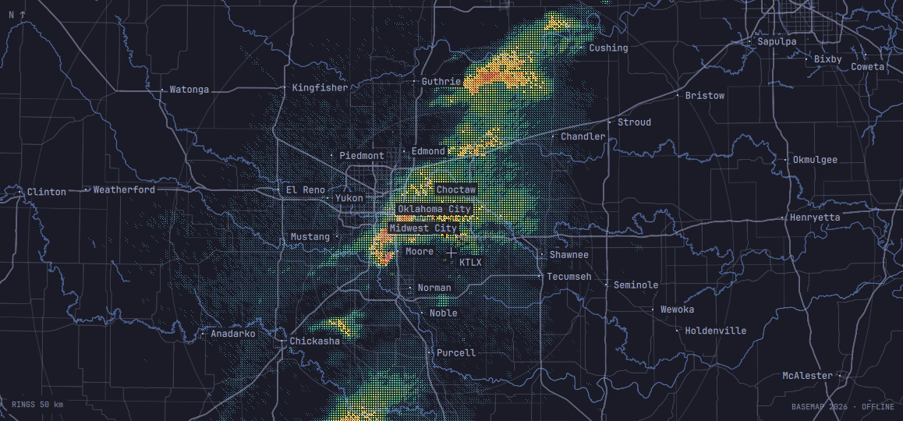

◈OMASTORM
In development
KTLX Oklahoma City
Reflectivity / 0.5°

Weather radar for the Omarchy desktop. Live NEXRAD, drawn from the measured data in the monospace pixel language of the shell.
- Native. Colors and font follow your theme, instantly.
- Honest. No mosaic, no vendor grid. What the radar saw, when it saw it.
- Live. Sweeps paint as the antenna turns.
- Keyboard first. Every site in the network, a keystroke away.